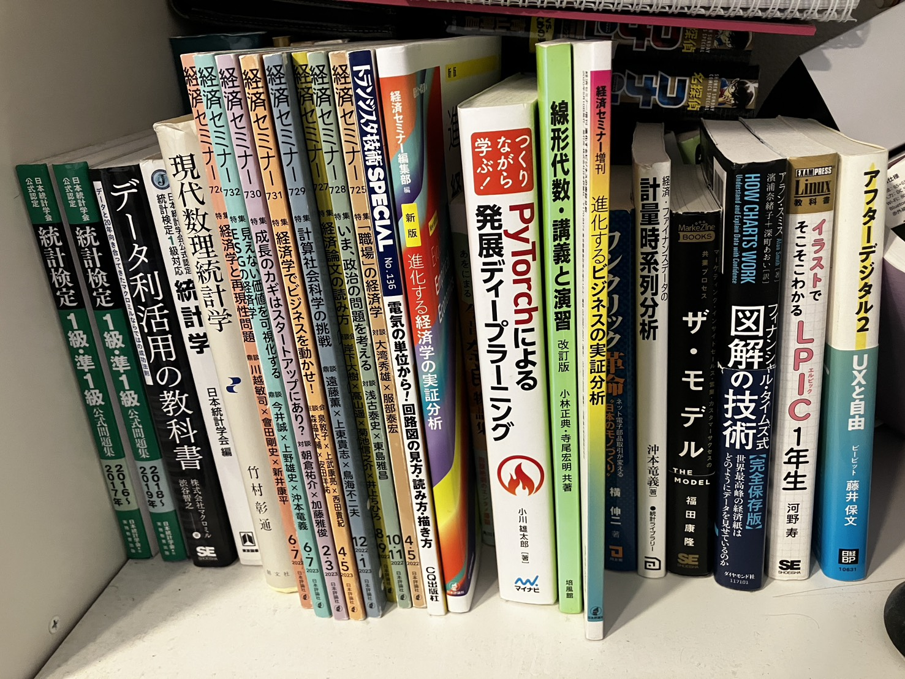

転職後の近況について
1. 転職後の近況について
おはこんばんにちは。またまた、かなり久しぶりの投稿になってしまいました。
2022年3月に今の会社に転職し、早くも4年が経とうとしています。
転職時の報告は「転職します」で記載しましたので、まずそちらをご覧ください。
今回は、転職してからの近況について書いてみようと思います。
2. 仕事について
現在はデータサイエンスやAI関連のプロジェクトを企画する仕事をしています
退職エントリでは、プロジェクトマネージャーとしての仕事にやりがいを感じていると書きました。
現在でもプロジェクトマネージャーをやるときはありますが、より上流の企画段階から関わることが多くなりました。
データサイエンスやAIをどのように用いれば、ビジネス戦略を実現できるかを考える仕事です。
そして、そのためにどういったデータをどのように蓄積すればよいのか、といったことも考えます。
解くべき問題を定義し、その解き方を考える仕事です。やりがいを感じています。
転職してすぐは可視化ダッシュボードを作成していました
転職してすぐは、主にPower BIを用いて可視化ダッシュボードを作る仕事をしていました。
ユーザー部門からデータと要件をもらい、Power BIで認知負荷の低いダッシュボードを作る仕事です。
Power BIは使用したことがありませんでしたが、すぐに慣れました。
高度な分析を行うことはありませんでしたが、可視化を通じて特に営業部門のドメイン知識を深めることができました。
また、可視化に関する本を読み漁り、KTさんに心酔し、意思決定に貢献するためには綿密にダッシュボードを作りこむ必要があることを学びました。
あるプロジェクトでは、取り組みの内容について社長に直接報告することもありました。
広く市民開発のサポートへ
Power BIでのダッシュボード作成をしばらく続けた後、広く市民開発のサポートをするようになりました。
まず、UiPathの社内受託開発サービスを立ち上げました。また、主に営業アシスタント向けにPower BIやUiPathを用いた教育プログラムを企画・運営する仕事もしました。
デジタルツールの活用を促進し、会社全体に対して業務効率化を広めていく仕事にスコープが広がっていきました。教育プログラムの取り組みについては、社長表彰を受賞することができました（びっくり）。
高度データ分析チームへの配属
2023年に部署が異動になり、高度データ分析を行うチームに配属されました。
事業損益管理の高度化、機械学習モデルを用いたレコメンドアルゴリズムの開発、損益シミュレーションツールの開発などを行っています。
過去事例や社外知見を引っ提げて、部門を回り、プロジェクト企画を提案する仕事もしています。
所属する部の中期方針の策定を任されたり、役員や管理職が参加する重要会議で生成AI活用を企画することもありました。
現在の関心事は、以下のようなことです。
- 売り上げや利益の拡大につながるプロジェクトを企画・達成すること
- 産業組織論や因果推論の知見を活用して、ビジネス戦略の材料となるナレッジを蓄積すること
- 非常に多くの社員の意見を可視化、集約し、経営の透明化や社員のエンゲージメント向上に貢献すること
- 若手メンバーへプロジェクト企画、推進のノウハウを共同化・表出化すること
3. 私生活について
関西で生活できる幸せ
東京から関西に帰ってきて、なにより食べ物がおいしい。行き慣れた店や場所も多く、刺激はないけど安心感がある生活を送っています。お互いの実家が近く、両親とも仲が良いので、家族で集まる機会も多いです。
子供が生まれた
2025年2月14日に第一子（長男）が生まれました。妻も子供も健康で、毎日幸せな日々を過ごしています。子供が生まれてからは、育児休暇を約半年取得していました。育児休暇中は、子供の世話をしながら、家事をほぼすべて行っていました。
子供が生まれたことでワークライフバランスに対する考え方が変わり、私生活の時間をより多く確保するようになりました。先日、保育所の入所が決まり、ほっとしているところです。まだ一歳になったばかりなので、関西弁はしゃべりませんが、バリバリの関西弁を仕込むつもりです。

4. 仕事を変えた所感
市場が拡大していく企業は社内の雰囲気から違う
新卒で入社した会社はアセットマネジメント業界でした。アセットマネジメント業界は、おもに国内のアセットオーナーを顧客とする業界です。日本は人口減少や高齢化が進んでいるため、アセットマネジメント業界は市場が縮小していくと考えられています。そのため、縮小していくパイを数社で奪い合う構造で、コスト削減や効率化が求められ、新しいことに挑戦する雰囲気はありませんでした(あったとしても少数派で大多数は冷ややかな目で見ている)。また、ビジネス戦略と呼べるものもなく、金融専門職はいるが、ビジネスパーソンが不在という状況でした。
一方、転職して入社した会社は、電子部品業界です。自動車の電装化やAIサーバなどの需要を受け、今後も市場が拡大していくと考えられています。市場が拡大していく企業は、社内の雰囲気から違うと感じました。拡大する需要をどのように取り込んでいくか、中華系企業の台頭にどのように対抗していくか、など競争が激しい領域なので積極的にリスクをとることが求められます。事業部門でビジネス戦略を立てられる人材がいて、その戦略を実現するために我々を頼ってくれるので、やりがいを感じます。
勉強熱心な社風で自分も技術的に成長した
これは社風によるのかもしれませんが、非常に勉強熱心な方が多いです。社内での勉強会は定期的に開催されます。最新のデータサイエンス技術やソフトウェアエンジニアリングのナレッジについて、社員が自発的に発信しています。私も転職してから応用情報技術者を取得し、最近はクラウドサービス（おもにAWS）を活用してアプリケーションを構築することも多いです。フロントエンドもバックエンドも（まだまだ勉強中ですが）自分で構築できるようになりました。
前職自体のExcel, PowerPointで作業していたころからすると、技術的にかなり成長したと感じます。
読む本が変わった
以前は経済学とアセットマネジメントに関する本ばかり読んでいました。CLS決済、金融工学、バックオフィス業務などです。
現在は、色々な範囲の本を読むようになりました（マクロ経済学からは遠ざかった）。
- 統計学（産業組織論と因果推論多め）
- 機械学習
- ソフトウェアエンジニアリング
- データマネジメント
- UXデザイン
- UIデザイン/データビジュアライゼーション
- フロントエンドエンジニアリング(React, HTML/CSS)
- 経営戦略
- 電気回路/電子回路



マクロ経済学からはかなり遠ざかった
大学院ではマクロ経済学を専攻していましたが、転職してからはかなり遠ざかりました。
時系列分析や金融の知識を生かす機会もあまりありません。
むしろ、運用企画をやっていたときの管理会計の知識や予算管理、企画立案、プロジェクトマネジメントの経験が生かされていると感じます。
マクロ経済学は政策立案には役立つと思いますが、中央官庁、日銀、シンクタンクでしか役立たず、なかなかお金になりにくいと思います。ミクロ実証だと営利企業でも役に立つと思いますが。ここは、大学生の皆さんには注意してほしいポイントだと思います。
ビジネスパーソンとしても成長できた
前職では、金融専門職が多く、特にファンドマネジャーを目指す若手が多かったです。ファンドマネジャー以外のキャリアパスが不透明で、ビジネスパーソン（と呼べる人）が少ない環境でした。
転職してからは、電子部品の専門性が高い人もいれば、BizDevを深める人、アカウント営業を極める人、マーケティングやインサイドセールスの戦略を立てる人など、様々なキャリアパスを歩む人がいます。
私は、ビジネス戦略を実現するためのデータ戦略を立案する立場で、ビジネスパーソンとしての成長も感じています。今後も、ビジネス部門とデータサイエンス部門をつなぎ、ビジネス成果を出すことにコミットしていきたいと思います。
今の会社は人がいい
今の会社はやさしい人が多いと感じます。前職も周りの人には恵まれていたと思います。一方で、ただ退職を待ちながら仕事している人やプロフェッショナルさを感じない人もそれなりにいました。また、組織間の事でストレスを感じる機会もそれなりにあったように思います。胃が痛い思いも何度かしました。
時代が変わっているのかもしれませんが、今の会社は詰めてくるような人がほとんどいません。人間関係のストレスが少ない環境で仕事できていることには感謝です。
人が多すぎるところはネック
いわゆる伝統的な日本の大企業なので、社員数が多いことはネックに感じることもあります。社内の人とコミュニケーションをとるのが大変なこともありますし、社内の人と関わるための会議が多いこともあります。また、役割が重複している部署があったり、情報連携が不足しているなど、組織構造の複雑さも感じることがあります。ここは前職ではあまり感じなかったポイントです。
電子部品のドメイン知識のキャッチアップが課題
経済学がバックグラウンドの私にとって、電子部品は全く未経験の領域です。いまだに商品に対する理解は不十分だと感じています。育休中には、電気回路・電子回路に関する入門本を読んでみましたが、まだまだ理解が足りないと感じています。また、業界の構造や競合企業の動向なども理解が不十分だと感じています。お客様がどのような課題を抱えているのか、どのようなニーズがあるのかを理解するためにも、ドメイン知識のキャッチアップは引き続き課題だと感じています。
5. おわりに
転職してからの近況について書いてみました。 仕事も私生活も充実していて、幸せな日々を過ごしています。転職は正解でした。機会に恵まれていたと思います。 今後は、日本を飛び出して海外拠点で働いてみたいなぁと思い始めています。